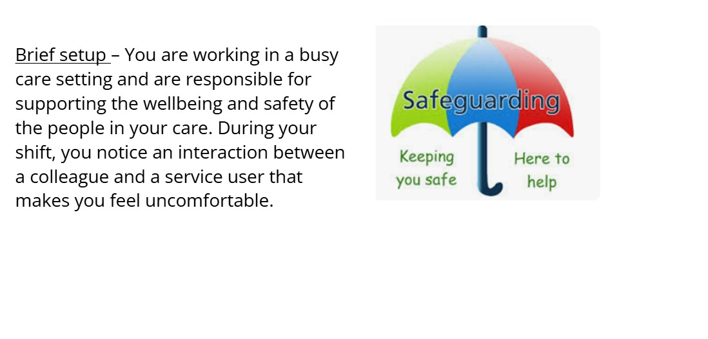
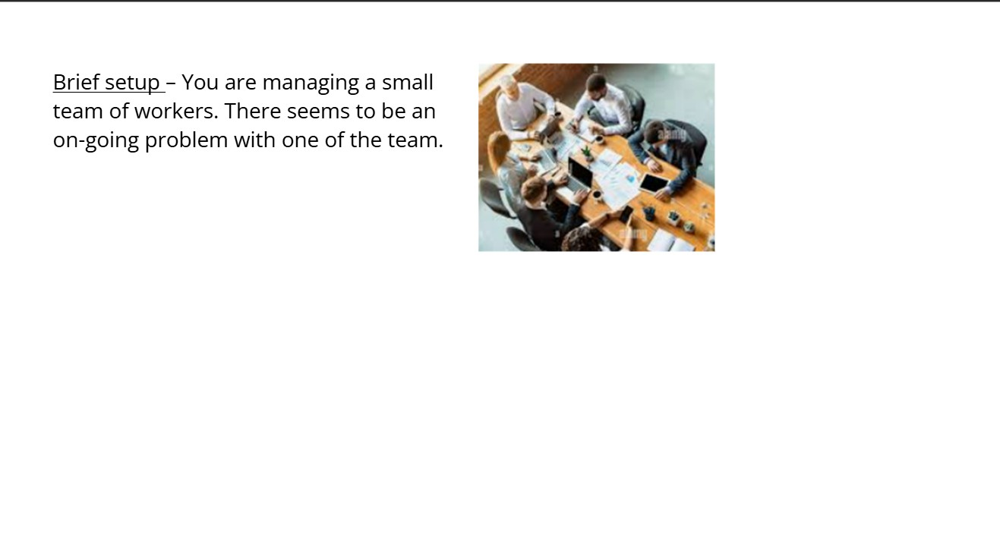
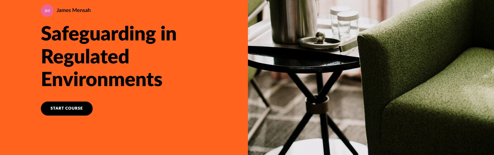

James Mensah – Instructional Design Portfolio
I design interactive learning experiences using Articulate Storyline and Rise.
My focus is scenario-based learning, onboarding, communication skills, and practical workplace training.
Storyline Scenarios

Supply Teacher Scenario
Classroom behaviour management scenario where learners choose how to respond to disruption and review the consequences of each action.

Safeguarding Scenario
Interactive scenario exploring appropriate responses to safeguarding concerns in regulated environments.

Difficult Conversations Scenario
Branching scenario focused on handling sensitive conversations in a calm, professional, and constructive way.
Rise Modules

Supply Teacher Onboarding
Interactive onboarding module introducing key expectations and first-day essentials for supply teachers.

Safeguarding Module
Web-based learning module covering safeguarding measures and awareness in regulated environments.
Difficult Conversations Module
Short digital learning module focused on preparing for and managing difficult workplace conversations.